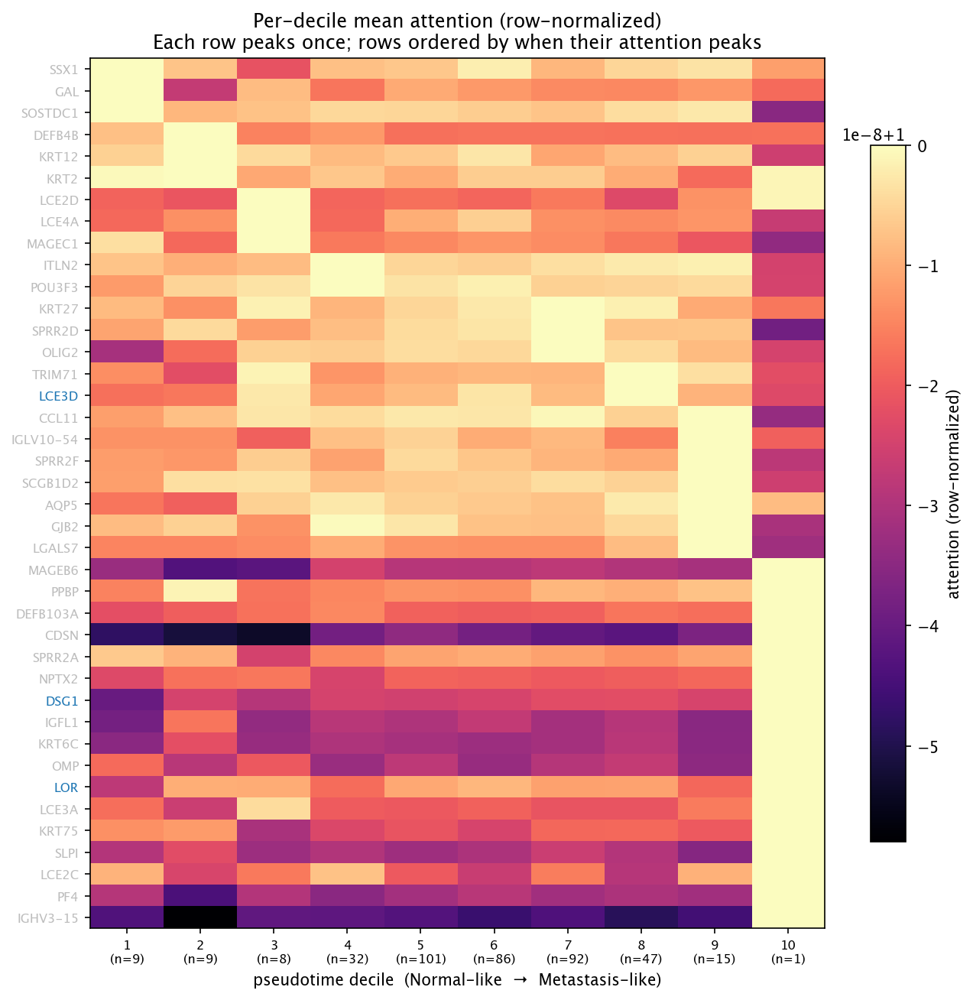
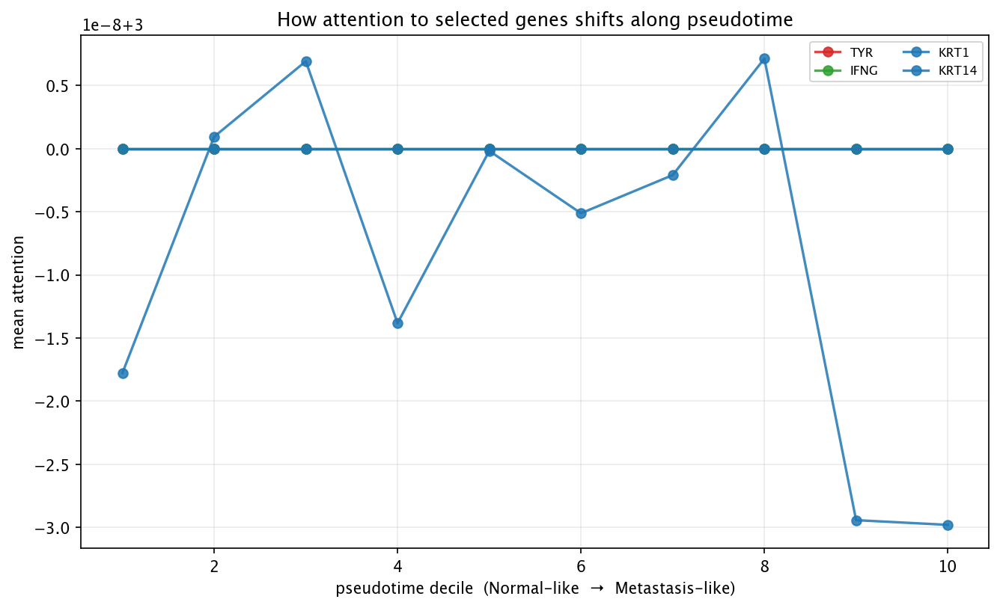

Dentro da rede treinada, cada amostra é resumida em uma lista de ~64 números — seu embedding. Pense nele como a impressão digital da amostra para o modelo: embeddings parecidos = amostras que o modelo considera parecidas. Não olhamos para essa impressão digital durante a predição; a rede só a usa para decidir uma classe. Mas podemos olhá-la, e é daí que parte esta análise.
Calculamos duas âncoras no espaço de embeddings: o embedding médio das amostras de pele Normal (a "âncora normal") e o embedding médio das amostras de Metástase (a "âncora de metástase"). Em seguida, desenhamos uma reta imaginária entre as duas e projetamos toda amostra sobre essa reta. Cada amostra recebe um número entre 0 e 1:
Dividimos esse eixo 0→1 em 10 bins de largura igual (decis) e, para cada bin, calculamos a média dos escores de atenção do modelo entre todas as amostras que caíram nele. O resultado é um retrato de quais genes o modelo foca em cada passo ao longo do eixo Normal → Metástase.
Checagem de sanidade: os bins iniciais devem ser principalmente amostras Normais, os bins finais principalmente Metástase. Se forem, o eixo está fazendo o esperado. (Tumores primários normalmente ficam no meio.)
| decil | Normal | Primário | Metástase | total |
|---|---|---|---|---|
| 1 | 9 | 0 | 0 | 9 |
| 2 | 9 | 0 | 0 | 9 |
| 3 | 2 | 4 | 2 | 8 |
| 4 | 0 | 4 | 28 | 32 |
| 5 | 0 | 12 | 89 | 101 |
| 6 | 0 | 10 | 76 | 86 |
| 7 | 0 | 4 | 88 | 92 |
| 8 | 0 | 0 | 47 | 47 |
| 9 | 0 | 1 | 14 | 15 |
| 10 | 0 | 1 | 0 | 1 |
Linhas = genes cuja atenção mais varia ao longo do eixo. Colunas = os 10 decis de pseudotempo, ordenados de Normal-like → Metástase-like. Cada linha é normalizada pelo próprio pico (claro = "a atenção deste gene atinge o pico aqui"). As linhas estão reordenadas de modo que genes cujo pico ocorre cedo aparecem no topo, e os de pico tardio embaixo.
Como ler a figura: uma linha clara à esquerda e escura à direita significa "o modelo prestou atenção neste gene principalmente em amostras parecidas com normais, e deixou de se importar quando elas ficaram mais parecidas com tumor". O padrão inverso aponta para o outro lado.

Alguns genes representativos de cada categoria de referência, plotados como atenção vs. decil de pseudotempo. Mesma informação do heatmap, mas mais fácil de ler para um conjunto pequeno de genes.

Esta é a figura mais ambiciosa do projeto: ela amarra o embedding (o resumo interno do modelo) e a atenção (quais genes o modelo usa) em uma única narrativa de progressão. Se genes de queratina e de pele-normal dominam os decis iniciais e desaparecem nos finais, enquanto os de linhagem melanocítica e de progressão de melanoma fazem o oposto, o modelo internalizou um quadro coerente de como a pele transita para melanoma — puramente a partir de expressão e topologia PPI, sem nenhum rótulo de progressão no treinamento.